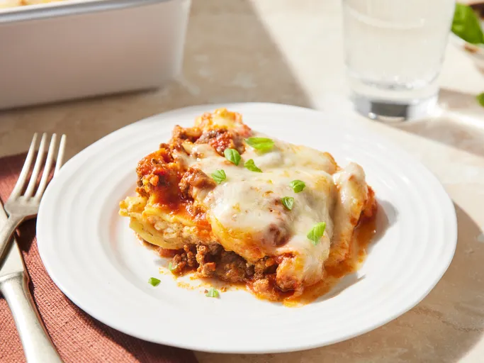

The key to this red cabbage salad with cucumber, green onion, and cilantro is the dressing. Toasted sesame oil, ginger, garlic, and soy sauce give the dressing an East Asian influence. You can add other shredded vegetables (carrots, bell pepper, etc.) as well.
Gather all ingredients and preheat the oven to 350 degrees F (175 degrees C).
Heat a large skillet over medium-high heat. Cook and stir ground beef in the hot skillet until browned and crumbly, 8 to 10 minutes. Drain and discard grease. Stir in spaghetti sauce and simmer for 5 minutes.
Combine cottage cheese, 2 cups of mozzarella cheese, eggs, 1/2 of the grated Parmesan cheese, dried parsley, salt, and pepper in a large bowl.
Bake in the preheated oven for 45 minutes. Uncover and bake for an additional 10 minutes. Let stand 10 minutes before serving.
Serve and enjoy!